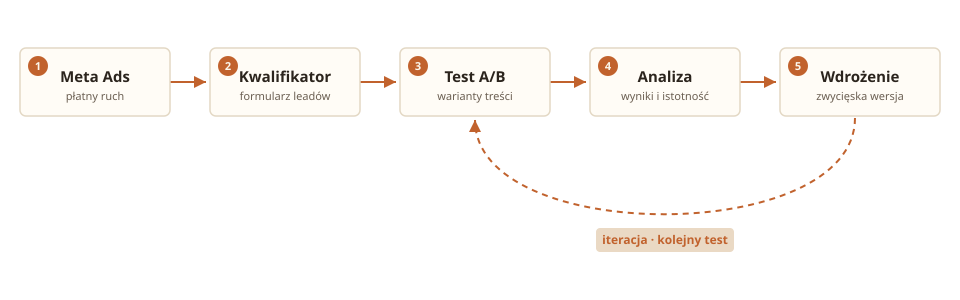

Content, który się testuje. Dane, które to potwierdzają.
Projektuję treści jako system: pisane pod konkretny cel, testowane na dużym ruchu i optymalizowane na podstawie liczb, nie wrażeń. AI jest narzędziem, nie tematem.
Zaczynałem od marketingu, contentu i digital PR: pisania, strategii, link-buildingu. Po drodze wziąłem AI jako narzędzie, nie temat rozmowy. Dziś projektuję content jako system: testowany na dużym ruchu, mierzony liczbami i optymalizowany na podstawie danych, nie wrażeń.
Doświadczenie
AI Content Specialist2025 – teraz
Tutlo
Content na kwalifikatorach (testy A/B na dużym ruchu) i kampanie mailingowe do bazy. Materiały AI do kampanii, certyfikat n8n.
Copywriter02.2024 – 02.2025
Flying Bisons
Zarządzanie contentem na blogu, artykuły klienckie, copy social media, optymalizacja SEO, kampanie link-buildingowe.
Outreach Specialist10.2023 – 02.2024
Titan
Strategiczne kampanie link-buildingowe w branży Salesforce.
Digital PR & Content Specialist04.2022 – 09.2023
Tidio
100+ wysokiej jakości backlinków kwartalnie, relacje z dziennikarzami, kampania na Product Hunt.
Sports Journalist05.2021 – 05.2022
Wirtualna Polska
Relacje live, analiza statystyczna, newsy międzynarodowe, optymalizacja SEO.
Edukacja
Magister · Nowe media w komunikacjiUAM Poznań · 2023–2025 (zaoczne)
Licencjat · Dziennikarstwo i komunikacja społecznaUniwersytet Szczeciński · 2020–2023
Projekty
Content, produkty i konkrety.
Od testów contentowych na dużym ruchu po własne SaaS-y. Każda karta to realna praca, nie deck.
01
Kwalifikatory: testy contentowe na dużym ruchu
Content Strategy · Tutlo
🟢 W produkcji
Odpowiadam za content na kwalifikatorach, czyli formularzach kwalifikujących leady napływające z płatnych kampanii Meta. Samodzielnie dobieram i wdrażam testy A/B treści, analizuję wyniki i podejmuję kolejne decyzje contentowe.
Pełna pętla: hipoteza → test → analiza istotności → wdrożenie

Pętla, w której content sam się testuje i poprawia.
Content Strategy
A/B Testing
HubSpot
Meta Ads
02
Kampanie mailingowe na dużej bazie
Email Marketing · Tutlo
🟢 W produkcji
Prowadzę kampanie mailingowe do bazy około 2500 kontaktów miesięcznie: od researchu tematów, przez pisanie treści, po decyzje o segmentacji i rytmie wysyłek. To praca rzemieślnicza: dobre segmentowanie, testowanie tonu i długości, dopasowanie treści do etapu odbiorcy. Liczy się konsekwencja i jakość procesu.
Email Marketing
Content
Segmentacja
03
Operly
SaaS · Solo founder · operly.com
🔵 W budowie
SaaS dla wielolokalizowych biznesów gastronomicznych i retail (2–15 lokalizacji). Jako solo founder odpowiadam za wszystko, od architektury (Supabase, RLS) po marketing i stronę EN/PL na operly.com.
Architektura danych i bezpieczeństwo (Supabase, Row-Level Security)
Pozycjonowanie i GTM: strona dwujęzyczna, komunikacja produktu
Supabase
Next.js
Solo Founder
GTM
04
SowFast
SaaS / AI-powered · sowfast.com
🟢 Live
AI-powered generator Scope of Work. Zamiast godzin ręcznego pisania: gotowe, precyzyjne dokumenty na podstawie kilku inputów.
Model freemium (Free / Solo / Agency), treści generowane przez Claude API
Launch na Product Hunt, zbudowany solo
React
Supabase
Claude API
Stripe
05
🎬 AI Film Showreel
Media / Generative · 6 scen, produkcja własna
🟢 W produkcji
Sześć scen zbudowanych w całości narzędziami generatywnymi: spójna tożsamość postaci, polskie dialogi i narracja. Dowód umiejętności produkcji contentu wideo od konceptu po montaż.
Veo
ElevenLabs
Nano Banana
06
Quotably
SaaS / AI-powered
🔵 W budowie
Narzędzie, które przekształca surowe testimoniale klientów w gotowe do publikacji formaty. Chaos maili i screenów zamienia w social proof, który da się od razu wykorzystać.
React
Supabase
Claude API
Stack
Narzędzia, które znam w praktyce.
Każde z realnych wdrożeń, nie z tutoriali. Dobierane pod wynik, nie pod CV.
Content & Marketing
HubSpot
SEO
Content Strategy
Email Marketing
A/B Testing
Meta Ads
Analytics
Digital PR
Link Building
Copywriting
AI Productivity
Claude Cowork
ChatGPT
Perplexity
Gemini
Więcej: AI Dev & Automation · AI Media & Generative
AI Dev & Automation
n8n
Supabase
Claude Code
Base44
OpenAI API
Make
Zapier
GitHub
Bolt
BigQuery
AI Media & Generative
Veo
ElevenLabs
Nano Banana
Midjourney
Runway
Kling
Kontakt
Porozmawiajmy o content & growth.
Szukasz kogoś, kto traktuje content jak system oparty na danych, a nie zgadywaniu? Napisz, chętnie opowiem o konkretach.